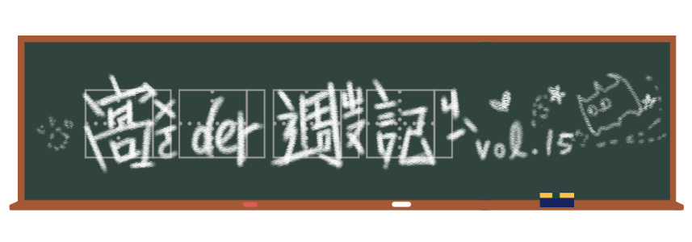

病度肆虐連帶景氣低迷，迷因市場也苦苦等嘸新的明日之星，
不過本週出現幾個讓人在意的迷因。
美隊電梯梗圖
冷笑話要如何重獲新生？用新的格式重新表現或許是個好主意。但美隊迷因不只是把冷笑話作成圖而已，重點在於搭配一些說到爛的笑話，真的要「夠爛」才能廢到笑。
起源
（可能有劇透，慎）
美國隊長的組圖由四或五張電影畫面截圖合成，在《復仇者聯盟：終局之戰》之中，美國隊長遭遇了與《美國隊長2：酷寒戰士》中相似的電梯場景，電梯裡是滿滿的九頭蛇。但在《終局之戰》，美國隊長對神盾局特工賈斯伯．西德維爾（隱身在神盾局的九頭蛇成員）悄聲說了句：「九頭蛇萬歲」，因而成功避免大打出手，從電梯中全身而退。
前幾張有西德維爾的圖出自《終局之戰》，最後一張美隊被架住的圖出自《美國隊長2》，這是一張發生時序剛好顛倒的圖。
散佈
在Reddit上，由網友LazyMeercat分享了一系列的美隊梗圖搭配「Dad Jokes直譯為老爸笑話，簡單說就是冷笑話，不過Dad Jokes還有那種聽的人覺得不好笑、講的人卻覺得很好笑硬要講的感覺，請自行想像自家老爸講笑話的那種尷尬。」的模板。
在台灣，由Michael Poe製作的一系列美隊迷因相簿，獲得了超過4,000次分享。有許多大家聽到爛的諧音老笑話，也有一些老到沒看過(?)的笑話，反而讓人耳目一新(?)。不過，看到被當作一般笑話去笑的時候，還真是像Dad Jokes讓人尷尬癌發作。
哭哭喬丹
2月24日，湖人隊在球隊主場Staples Center為直升機墜毀身故的傳奇球星Kobe Bryant舉辦追思會，現場聚集約2萬多人，影視、體育界名人齊聚一堂，其中包含「籃球之神」麥可．喬丹（Michael Jordan），他在上台致詞前就已經淚流滿面。
起源
這個表情大家可能在哪看過，沒錯，哭哭喬丹就是喬丹本人（好像在說廢話）。這是他2009年參加「籃球名人堂」入選儀式時被拍下的照片，由美聯社攝影師Stephan Savoia所拍攝。當時喬丹也是要上台致詞卻哭到不行。
很可惜這次並非影片截圖，而是貨真價實的一張照片，不過可以到這個影片看喬丹哭哭
散佈
當時哭哭喬丹的臉很普通地被P在一些慘敗的運動選手的臉上，後來就只是被當作一般的哭哭表情。在2015到2016年間哭哭喬丹達到顛峰，不出所料地有了網站產生器和製圖app，甚至到後來連運動媒體都表示太氾濫。2016年，美國總統歐巴馬在頒發總統自由勳章給喬丹時，也打趣說道：「他不只是一個迷因。（more than just an internet meme.）」
「他總是衝康我」
回到Kobe的追思會上，喬丹全程淚不停，但仍然接連說了幾件與Kobe的趣事。「他這次又衝康我了，接下來我又要在網路上看到一堆哭哭迷因。我告訴老婆說我不想致詞，因為我不想接下來三、四年都一直看到這些玩意兒。」此話一出逗得全場又哭又笑，也是他第一次正面回應有關哭哭迷因的事。
這歷經超過十年的兩相對照讓人得以看見，這位與籃球幾乎畫上等號的巨星始終都是真情流露。